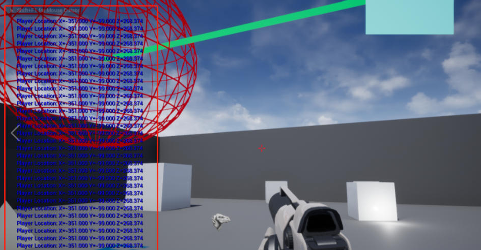

寻找玩家的当前位置
接上一节，这是一个关于如何从其他角色获得玩家当前（矢量）位置的简单教程。从 Actor 父类继承一个名为 FindPlayerLocation 的新类。我们不需要在头文件中做任何事。
下面是为类生成的默认头文件。
#include "CoreMinimal.h"
#include "GameFramework/Actor.h"
#include "FindPlayerPosition.generated.h"
UCLASS()
class UNREALCPP_API AFindPlayerPosition : public AActor
{
GENERATED_BODY()
public:
// Sets default values for this actor's properties
AFindPlayerPosition();
protected:
// Called when the game starts or when spawned
virtual void BeginPlay() override;
public:
// Called every frame
virtual void Tick(float DeltaTime) override;
};
在 .cpp 文件中，我们将把逻辑放在 Actor 派生类的 Tick 函数中。获取玩家位置使用每个角色都可以访问的 GetWorld() 函数，然后使用 GetFirstPlayerController()，然后是 GetPawn()，然后是 GetActorLocation() 。
下面是我们将要调用的最后一个函数。我们将返回向量传递给一个名为 MyCharacter 的变量。
FVector MyCharacter = GetWorld()->
GetFirstPlayerController()->ff
GetPawn()->
GetActorLocation();
下面是最后的 .cpp 文件。我添加了一个 DebugMessage 来在屏幕上的每一帧打印我们玩家的位置。
#include "FindPlayerPosition.h"
// Sets default values
AFindPlayerPosition::AFindPlayerPosition()
{
// Set this actor to call Tick() every frame. You can turn this off to improve performance if you don't need it.
PrimaryActorTick.bCanEverTick = true;
}
// Called when the game starts or when spawned
void AFindPlayerPosition::BeginPlay()
{
Super::BeginPlay();
}
// Called every frame
void AFindPlayerPosition::Tick(float DeltaTime)
{
Super::Tick(DeltaTime);
// 获得第一人称玩家棋子的位置
FVector MyCharacter = GetWorld()->GetFirstPlayerController()->GetPawn()->GetActorLocation();
// 在屏幕上记录玩家的位置
GEngine->AddOnScreenDebugMessage(-1, 5.f, FColor::Blue, FString::Printf(TEXT("Player Location: %s"), *MyCharacter.ToString()));
}
最终效果图
